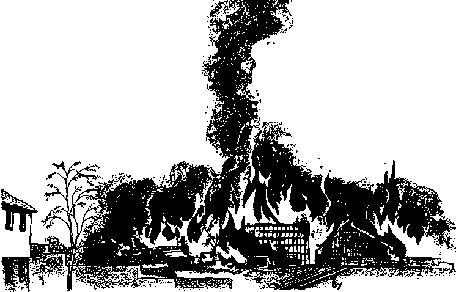

Where May Real Security Be Found?
Resistance Without Violence
Spotlight on the Monrovia Conference
PAG&13
Weather Made to Order
"PAGE16^
THE MISSION OF THIS JOURNAL
News sources that are able to keep you awake to the vital frtufcl Of our times must be unfettered by censorship and selfish interests* “Awake!” has no fetters, it recognizes facts, faces facts, is free to publish facts* If is not bound by political ambitions or obligations; it is unhampered by advertisers whose toes must nat be trodden on; it is unprejudiced by traditional creeds* This journal keeps itself free that it may speak freely to you. But it does not abuse its freedom. It maintains integrity to truth*
“AwakeP1 uses the regular news channels, but is not dependent on them* Its own correspondents ore on all continents, in scores of notions* From the four corners af the earth their uncensored, on-the-scenes reports come to you through these columns. This journal’s viewpoint is not narrow, but is international. It is read in many nations, in many languages, by persons of all ages. Through its pages many fields of knowledge pass in review—government, commerce, religion, history, geography, science, social conditions, natural wonders—why, its coverage is as broad as the earth and as high as the heavens*
"Awake!” pledges itself to righteous principles, to exposing hidden foes and subtle dangers, to championing freedom for all, to comforting mourners and strengthening those disheartened by the failures of a delinquent world, reflecting sure hope for the establishment of o righteous New World.
Get acquainted with "Awake!” Keep awake by reading "Awake!"
Published Simultaneously in the United States by the
WATCHTOWER BIBLE AND TRACT SOCIETY OF NEW YORK. INC. 117 Adams Street Brooklyn 1, New York. U.S.A.
and in England by WATCH TOWER BIBLE AND TRACT SOCIETY
Watch Tower House, The Ridgeway London N.W. 7, England
N. H. Knokr. President Grant Suiter, Secretary
Printing this issue: 3,250,000 Ad ft
copy (Australia, 5d; South Africa, SVac)
^Awakg!" Is published In the following 23 languages: Semimonthly "-Afrikaans. CinyanJu. Danish, Dutch, English, Finnish, French, German. Greek, Italian, Japanese, Norwegian, Portuguese, Spanish, Swedlrfi, Tagaluft, Zulu. Monthly- -Cebu - V Isayan, ] locano, Korean. Malaya la m * Polish, Ukrainian.
Yearly sutler iDtlnn rates
(Ktlees for semi monthly editions
America, 11.$., 117 Adams BL. Brooklyn 1, N.I V Aistralla, 11 Be restart . fitrathfleid, N.S.W.
Canada, ifio Bri;Inland Are.. Toronto 19, Ont
England, Watch Tower House,
New Zealand* 021 New North Rd., Auckland, 'S.W. 1 7/* Soith Africa, Private Bag, Elandsfontetn, TvL 70e
Monthly editions cost half the above rates.
Henlttanecs tor subBcrlntfons In your country. Otherwise London. Notice of expiration before subi-crintion expires.
should be rent to the office send your remittance to la Bent nt Je&st two issue?
CHANGES OF ADDRESS should reach us thirty days before your moving (fate. Give is yagr old and new add res j (if possible, your old address label). Watch Tower, Watch Tower House, The RI die way, London N.W. 7, England.
Entered as second-class matter at Brooklyn* N.Y. Printed Id England
The Bible translation osed In “Awake!” fi the New World Translation of the Holy Scriptures. When other translations are used the following symbol; will appear behind the citations:
j15 - American Standard Version AT - An American Translation AV” — AiJthijrii'.ei! Version (1011) jju - J- N- Duitiy's veraiou
- Catholic Douay version EjD - The Lmphutic Diaslolt Jp ~ Jewjsli Publication frioc. Ltd - Isaac Leaser's version
xifo - Jampft Mnffatt's version Ro - J. B- Rutlierham's version RS - BevLed Standard Version Iff - Ronert Young’s version
CONTENTS
Where May Real Security Be Found?
Spotlight on the Monrovia Conference
Prayer: Senator versus Chaplain
Disaster on "Hill of River Water”
"Your Word Is Truth”
When Is the “Acceptable Time”?
fgS
WHY not enjoy the benefits of neatness and orderliness? Those who do have found great
NEAT
and such de junking promotes greater freedom from cares and aids neatness. A letter written to The Listener tells of one man’s joy in this regard: “I have been collecting things almost ever since I can remember. . . , They have gone with me from house to house, but now ... I have got rid of them. A
er efficiency, emotional contentment and happiness. All it takes is a little thoughtfulness, a little time, a little care. The results are amazingly beneficial.
Neatness should begin at home. If the outside or inside of a home is unsightly or disorderly, it casts an unfavorable reflection upon the occupants of that home. Orderliness, on the other hand, reflects favorably on all members of a family and also on any organization of which they may be a part.
Neatness also saves time and lightens household cares. Disorder and untidiness are wasteful of energy. Cluttered-up drawers and closets rob one of much time when something needs to be found. Disorderly closets bulging with things that will seldom if ever be used also irritate the nerves. How many closets bulge with stored-away things that might more profitably be discarded or given to others who could use them!
A spring or fall cleanup campaign often clears out items that may really he junk, great van came and took them all away. ... In the past I have found it so hard to throw things away. That shabby leather strap . . . that picture I thought so beautiful so many years ago . . . the amount of rubbish! . . . They have gone in such quantities that we found it advisable to tip the junkmen to take them all away. I feel better and younger without them."
But many things are needed and used from time to time. Where are they stored? Many places are often used as storage sites —attics, basements, spare rooms, front and back porches, back yards, garages, automobile storage compartments and even stairways. What is the condition of these places? Are they neat and orderly? Too often they are in a state of disarray. Trying to find something in such an attic, for instance, can be a most frustrating experience. But if boxes are clearly labeled as to contents and orderly arranged, storage places can be kept tidy.
There is a most vital benefit in orderliness that is sometimes overlooked: the avoidance of hazards. Stairways cluttered with objects are hazards. Though experienced family members may be able to hurdle such obstacles, outsiders may not be as successful. People often fall over something on a stairway and end up with broken bones or worse. Scrap paper, old oily rags and open paint buckets can be a fire hazard. Neatness and orderliness can thus save not only one’s home and property but also one’s health and life.
Enjoying the benefits of neatness calls for family co-operation. A husband who throws magazines, newspapers and other things around adds to his wife’s work and may well be irritating her. The tidy person hangs up clothes and puts away shoes and socks. Strewn about the room, they are a source of constant personal embarrassment when others come in. It shows a lack of respect for other members of the household who like a pleasant atmosphere and who are also embarrassed when they bring friends in and find the wife’s or husband’s clothing thrown about the room.
You will get more done in neat, orderly surroundings than when things are not neat. Disorder produces depression or tension and causes distraction. At your place of work or study keep tools, equipment, books, papers, drawers and file cabinets in an orderly way. Discussing the matter of greater efficiency through orderliness, the volume This is the Way to Study says: “While your chief object should be to establish a workshop suggestive of the use to which you are going to put it, it is also important that it be neat, pleasant, and colorful. You will do better work in cheerful surroundings than you will in a drab and unpleasant work room. Why this is we do not know. Perhaps pictures on the walls, curtains on the windows, an orderly arrangement of the furniture, and a clean and neat condition of things produce an unconscious feeling of satisfaction, relaxing tensions that interfere with the best mental work. . . . Depressing surroundings do nothing for the brainworker, except to slow him down.”
A neat personal appearance also contributes to one’s well-being and reflects well upon one. Having one’s clothes pressed, shoes shined, hair combed and pockets not overly loaded contributes to a neat appearance. Disorder in a woman’s pocketbook often comes to light when something has to be taken out in a hurry. The businessman or minister who carries a brief case needs to be certain it is in an orderly condition. The minister wants to imitate Jehovah God, “for God is a God, not of disorder, but of peace.” So he heeds the divine principle: “Let all things take place decently and by arrangement.” —1 Cor. 14:33, 40.
Enjoy the benefits of neatness by making it a continual process. This avoids time-consuming tidying-up campaigns every few weeks. Day by day be orderly. Put things back in their places after using them. All members of the family should know where things properly belong.
Parents should teach their children neatness. Let them clean up after themselves. Teach children to keep their rooms neat, to clean the bathtub after use, to put things away after using them.
Though we should strive for general neatness, we must remember that even good practices can be pushed to extremes. Guard against making a fetish of neatness, for fussiness builds up tension among all members of a household. Fussiness can be as annoying as sloppiness. Be neat, not fussy.
Put neatness to work, serving you, not enslaving you. It will pay for itself every hour of the day, bringing benefits in personal relationships, personal efficiency, safety, contentment and happiness.
ecurl
a rar&^
talT!
[X^vefyffhe his own
find it you havS-ta^ know where to look, but where can it be
in the days of Judah, it seems that no one
found in this modem world that lives by the code of survival of the fittest? How can there be any sense of security when people |n all nations are lacking in moral principles? Instead of living like civilized humans, they act like savage animals that continually fight among themselves and prey upon one another. How can there be any feeling of safety when you must constantly be on the watch to avoid being cheated or having things stolen? How can there be peace of mind when there are people who seek to take advantage of you and still others that put your life in jeopardy?
From general appearances the world seems to be without upright men, men of loving-kindness in whose presence you would feel secure. Its disregard for moral principles creates a condition that is similar to what existed in the ancient kingdom of Judah. Regarding this the prophet Micah said: “The man of loving-kindness has perished from the earth, and among mankind there is no upright one. All of them, for bloodshed they lie in wait. They hunt,
Can anyone feel secure in this morally corrupt world? What security is possible now and in the future?
k I J;
can be trusted, often not even those in one’s own family. Self-interest seems to destroy natural family affection. What the prophet goes on to say about Judah could well be said regarding the world today, especially apostate Christendom: “Do not put your faith in a companion. Do not put your trust in a confidential friend. From her who is lying in your bosom guard the openings of your mouth. For a son is despising a father; a daughter is rising up against her mother; a daughterin-law against her mother-in-law; a man’s enemies are the men of his household.”—Mic. 7:2, 5, 6.
The insecurity that is experienced because of the world’s mad, selfish scramble for material possessions, riches and personal advancement has been augmented by the awful power of atomic weapons and the bad relations among nations. Nevertheless, a sense of security can be had today that brings peace of mind and hope for the future.
Source of Real Security
Most people fail to find security because they look in the wrong places for it. It cannot be found by looking to political leaders, men of science or Christendom’s clergy. All are part of this world and manifest its* spirit. The clergy talk about moral principles but give their support and blessings to political leaders who have no regard for such principles. They preach the Christian gospel of peace but bless weapons of war and support international wars. How can such men who have made themselves an integral part of this corrupt world be a source of security? How can they give what they do not possess themselves?
To find real security it is necessary to turn to a source that is outside this worldly system of things, that is no part of it. Jehovah God, man's Creator, is that source. Being the Supreme Sovereign, he has complete security himself and is able to give security to those who look to him as the source of it.
In times of trial he gives strength to those trusting in him. He becomes a stronghold to them. “Jehovah is good, a stronghold in the day of distress. And he is cognizant of those seeking refuge in him.” Although he permits persecution to come upon Christians in order to try them, his spirit strengthens them in their distress, helping them to stand firm. He notices those seeking him and is readily found by them. “God is for us a refuge and strength, a help that is readily to be found during distresses.”—Nah. 1:7; Ps. 46:1.
Because of his strengthening spirit, trusting Christians have a sense of security that dispels fear of men. It enables them to stand before prejudiced judges and rulers without fear. Regardless of how they may be threatened or mistreated because of their faith, they will not break integrity to God. They will stand firm as a rock. An example of this is the experience of Jehovah’s witnesses in Nazi concentration camps and now in Communist prisons. They refuse to renounce their faith in exchange for their freedom or their lives.
During such times of distress the one who seeks refuge in Jehovah feels secure because he knows that he is assured of a resurrection if his enemies kill him. The harm they may do to him is only temporary. This knowledge gave early Christians a sense of security when they faced the wild beasts of Roman arenas. They knew that Jehovah is faithful to those trusting in him.
The apostle Paul tells of the sense of security he felt in Jehovah when he was at Ephesus in Asia Minor. It appears that he was compelled to face wild beasts there that put his life in danger. He felt secure in the knowledge of Jehovah’s promise of the resurrection. Since God had more work for Paul, he did not permit Paul’s enemies to kill him at that time. “For we do not wish you to be ignorant, brothers, about the tribulation that happened to us in the province of Asia, that we were under extreme pressure beyond our strength, so that we were very uncertain even of our lives. In fact, we felt within ourselves that we had received the sentence of death. This was that we might have our trust, not in ourselves, but in the God who raises up the dead.”—2 Cor. 1:8, 9.
Security can also be found in Jehovah’s truth. It is a protective shield that safeguards the mind from being brainwashed by the corrupt ideologies and vain philosophies of the world. It is a protection from worldly reasoning that would lead a Christian in the world’s path of opposition to God. It is a defense against religious falsehoods that imprison people to empty superstitions and to an unnecessary fear of religious leaders. This is the truth that
Jesus said would make people free.—John 8:32.
New System of Things
Jehovah’s new system of things involves the provision he has made for human salvation, the establishment of a unifying government for earth that will insure peace, the enthroning of a king of his choosing that will rule in righteousness and the building up of a theocratic organization for unifying dedicated Christians. Those who seek refuge in Jehovah as a stronghold must come within this new system of things. They must exercise faith in its provisions for bringing life and peace to mankind.
The people who already have come within the new system of things and found security there form a new-world society of dedicated Christians, They have separated from the world by refusing to participate in its political activities, its schemes for world domination or world peace and in its violent differences. Because they, like Jesus, take no part in the political affairs of this world, they are not responsible for the unscriptural actions taken by worldly leaders and governments. They live as a new-world society that acknowledges Christ as rightful Ruler of earth and that looks forward to the security of the righteous new order that will come by means of his kingdom.
These people live m peace and unity world-wide. National barriers, race and language do not break that unity. Because they obey Jesus’ command to “love one another,” you have no reason to feel unsafe in their presence. Unlike in the old-world society, your life is respected in the New World society.—John 13:34.
Since the high principles of God’s Word guide the New World society of Jehovah’s faithful witnesses, there is no uneasy feeling of distrust in it. When you come among them you are not associating with thieves, cheats and liars, but with trustworthy people, men of loving-kindness. Your possessions are safe with them, and you can expect to be treated honestly and uprightly. Here among these dedicated people of God in his new system of things, you can find real security now.
Hope for the Future
Within Jehovah’s new system of things can be found a hope for future security on earth that brings great peace of mind and a sense of safety today. That security will come by means of God’s kingdom. It is a real security that is certain despite today’s threats of nuclear extinction.
In that new order of divine making, all peoples will live in perpetual security from attacks by fellow humans or by wild beasts. A prophecy that was spoken to Jehovah’s covenant people of ancient times will then be true even of their physical circumstances. “They will no longer become something to plunder for the nations; and as regards the wild beast of the earth, it will not devour them, and they will actually dwell in security, without anyone to make them tremble.”—Ezek. 34:28.
To get the security Jehovah provides requires you to be instructed in Scriptural truths, in God’s purposes, that you may have a basis for absolute trust in him. It requires you to walk with God by following a course of obedience to his commands and laws, having faith in his promises. It requires you to work in unity with the many dedicated Christians who already have sought refuge in him.
A sense of real security can be had now, but you must seek it where it can be found. You must look to Jehovah. You must seek it in his new system of things. There you can find safety and peace of mind “under the very shadow of the Almighty One.”—Ps. 91:1.
Mardi Gras Rooted in Magic
MAGIC IN N0I8E
• “In the case of the Mardi Gras,” states the Swiss Lexicon, Vol. 3, p. 247, “heathen customs (Greek, Roman, German) have been joined with Christian customs. . . . The usage of instruments to make noise during the parade was originally intended not only to drive away evil spirits but also to awaken spirits which would bestow blessings.”
“MAGIC DEMONIC DOINGS”
• The following items are from the volume German Mar di Gras Customs, by Adolf Spamer, authority on Germany and its folklore: “From the very earliest days, masquerading has also included making the face unrecognizable by smearing it with paint or by putting on a mask, phantoms. Without such a change In facial characteristics the mask would remain human and the desired demonic and magic compulsion would be missing. . . . While the ‘phantom’ shows a frozen, icy smile, the wooden masks are designed to characterize more than to frighten, yet many other masks show demonic-devilish facial contortions. . . .
"The original type of mask, reminiscent at quick glance of the related forms of Polynesia and Central Africa, are still seen in Lotschen-tai (in the Wallis Canton of Switzerland). . . . This original purpose of masquerade and masking still appears in the customs of remote mountain valleys: the one dressed as a demon actually be< mes a demon and possesses thereby magic powers. . . . Although the entire week of Mardi Gras celebrations
/ / / ?
/ / ) / / / / ) f / I / / / / /
'l /
used to be filled with such magic demonic / doings all over Germany, yet today only remnants of this old custom are still existent, -a custom whose basis goes back to almost I one and a half thousand years.” /
MAGICAL FIRE
• “On the first Sunday during Lent, on / Invocabit Sunday, sometimes known tn certain j sections as Disk or Torch Sunday, an old • Mardi Gras custom becomes apparent espe- . ci ally in Western and Southern Germany, / that of lighting fires and torches. ... So the / old Mardi Gras includes magical fire which ■ is a defensive as well as at the same time an awakening action of magic productivity.”
ROOTS NOT PULLED UP
♦ “Mardi Gras is the term for an old, widely-held custom of early spring, and just like all pre-Christian customs of folklore must be tested as to strength in its fight with the Christian Church, which attempted to introduce it into its ecclesiastical year after attempts to destroy it had been proven futile. From the Church fathers on, from Tertullian, Chrysostom, Jerome and Augustine, throughout the entire Middle Ages, the Church fought against the noisy and degenerating masquerading carried on by the people. . . . Lutheranism was first successful to any great degree in causing Protestant Germany to do away with or at least to reduce the Mardi Gras customs, calling them a heathen-pa pal degenerating of the folk and a ’great abomination in the sight of God’. ... In 1687, the city council of Zittau banned the arranging for or the carrying out of all Mardi Gras parades, dances and banquets, so that, as history records it, ‘the old heathen Mardi Gras doings, allowed by the Papacy up until that time, should be finally brought to an end’. . . , But the renewed flare-up of th.' Mardi Gras doings ... is indicative of the vitality of these old customs.”
•FIGHT OF FRIGHTENED MEN*
* "The pre-Christian Mardi Gras was ... a period of wild enchantment at the threshold between the two seasons. In the fight traced back to our very beginning against the winterlike powers of death and destruction, the hope in the productivity of summer was mingled, the summer whose coming one attempted to insure through various kinds of defensive and alluring magical tactics. These customs . . appear to have been solidified into a set form of cult early in the German era, as expressed in parades, races and demonic masquerade dances . . . and which to an extent had to do with belief in the dead. . . . Here and there, even today, the nonsense of all this foolishness flickers through as a desperate fight of frightened human souls striving for life and happiness.”
ON April 29, 1961, 826 persons sat down in front of Scotland Yard in London and refused to move despite threats of arrest. “The demonstrators,” said The Sunday Times, “made no attempt to resist They sat in the roadway, and when police picked them up, they went limp and had to be lifted bodily into vans.” This was a typical demonstration of passive resistance, a method of protesting that has grown in popularity in recent years. Since it is puzzling to the average person, especially because it advocates the use of nonviolence against force,
dents began a nonviolent demonstration by sitting at lunch counters that were reserved for white persons. This was in a section of the United. States where the races are segregated. Their demonstration spread into an organized movement of passive resistance at lunch counters in six states and twenty cities, later including washrooms, libraries, beaches and other public facilities.
Arrests and violent opposition brought suffering to these Negro resisters, but that was
you may be interested in some of the reasoning behind it and how a Christian should view it.
By their act of civil disobedience, the demonstrators in Britain were endeavoring to focus public attention on their opposition to nuclear weapons. It may seem strange that a group of people should conclude that the best way to voice their protestations is by breaking a law, but that is one of the basic methods of passive resistance. The object is to get publicity. That is why demonstrators in Scotland and the United States have invited arrest by trying to board nuclear submarines.
American Negroes have turned to passive resistance as a more effective way to fight racial segregation than violent resistance. On February 1, 1960, Negro stuwhat they expected, and it helped to publicize their grievances. Reporting on their conduct, The Christian Century stated: “When lighted cigarettes were thrust down the collars of Negro students sitting at dime-store lunch counters in Nashville, Tennessee, when the sit-downers were reviled and spit upon, they did not strike back and they did not run away.” By suffering violence, but not retaliating with violence, the students hoped to swing public sympathy in their favor by causing their opposers to appear intolerant and cruel.
Negro resisters in South Africa succeeded in this when a cry of protest arose all over the world against the violent action used on them by the South African government. The sympathies of the world were for the resisters, much to the embarrassment of their rulers. These African demonstrators accomplished their aim as far as favorable publicity is concerned, but they did not accomplish their principal objective of changing the hearts of the men in power into being more liberal toward them.
Reasoning Behind Passive Resistance
The reasoning of nonviolent resisters is that by bringing suffering upon themselves instead of causing others to suffer, the conscience of their oppressors will be stirred, causing a change in treatment. Dr. William Nelson, vice-president of Howard’s School of Religion, put it this way: “The object is to convert, not by making someone else suffer, but by suffering yourself. The very sight of that suffering will draw attention to the problem.” Besides impressing on the rulers the urgency of their problem, the passive resisters hope to embarrass their rulers by attracting world attention to the suffering they are causing.
In the reasoning of passive demonstrators can be seen the influence of the philosophy of Mahatma Gandhi, the Indian leader who became famous through passive resistance. He astounded the world by fighting force with nonviolence, first in South Africa and later in India. His idea was that suffering brought upon one’s self for a cause was far more effective than causing someone else to suffer, as when demonstrators resort to violence. Thus the resister must be the one that suffers, not those whom he is resisting. Gandhi’s passive resistance movement was called Satyagraha, and regarding it Leo Kuper states in his book Passive Resistance in South Africa: “The effect of Satyagraha is thus to set both oppressive laws and force at nought. ... In relation to this force, the passive resister has so subjected himself to ascetic discipline that the range of effective sanctions is greatly reduced, and the hurt he sustains is a means toward the much desired self-purification. The mechanism of change in Satyagraha is not the embarrassment or coercion of the government, as in the first type of passive resistance, but a change of heart in the rulers, their conversion through the suffering of the subordinates,”
Disobedience and Aon-co-operation
Civil disobedience is the method of nonviolent protesting that is commonly used. The resisters invite arrest by violating a law. This they may do en masse to overwhelm the penal facilities of the civil authorities as well as to attract publicity to themselves. When 20,000 Africans milled around the police station on the outskirts of Johannesburg, South Africa, inviting arrest because of not having their hated passbooks, the police could not arrest and imprison that immense crowd. Neither could the authorities at Evaton, another South African town, imprison the 70,000 passive resisters that gathered there. Usually civil authorities are baffled by such large crowds of nonviolent demonstrators.
Small groups of resisters are another matter. They usually are arrested and jailed when they are guilty of civil disobedience. This punishment they bring upon themselves makes them martyrs to their cause and gives them a certain amount of prestige among their associates. Their suffering is a dramatic way of bringing to the attention of the authorities and of the public their pleas for a change in official policy.
Another method of nonviolent resistance is by non-co-operation with the rulers. This requires good organization among a large number of resisters whose services are needed by the government. The loss of their services forcefully brings to the attention of the officials the need to consider the protests of the resisters. A similar method of nonviolent resistance is boycott. When a large number of persons are organized to participate in a boycott, economic damage can be done to force oppressors to change their policies. This was used successfully by Negroes in Montgomery, Alabama, to help force the desegregation of municipal buses.
Bow Effective
There is some question as to the effectiveness of passive resistance. In the case of Mahatma Gandhi, it helped free India from British rule, and in the southern part of the United States it has helped to bring about some concessions in the segregation issue there. But its effectiveness depends to a great extent upon the type of government and the temperament of the rulers against which it is used. In a liberal nation where there is freedom of the press, it may have a measure of success, but what could it possibly accomplish under despotic rulers or under rulers that stubbornly refuse to consider the protests of a minority no matter how much they may suffer? Cruel rulers will not be moved by the suffering of passive resisters.
In some societies any act of civil disobedience is considered an act of rebellion and is punished harshly and ruthlessly. The number of people involved makes little difference. In fact, the more there are the more convinced a despotic ruler becomes that the passive demonstration is inimical to the interests of his rule.
How could the suffering of passive resisters move despotic rulers to compassion when such rulers are hardened to human suffering? When hundreds of thousands of people have been made to suffer, why should they be moved to compassion by the suffering of a few thousand nonviolent demonstrators? Did the suffering of millions of persons in Nazi concentration camps change the hearts of the Nazi leaders? It seems evident that the reasoning behind passive resistance is weak when an authoritarian state is involved.
Note what Leo Kuper states about this in his book Passive Resistance in South Africa: “There is no historical warrant for the basic assumption in Satyagraha ‘that the sight of suffering on the part of multitudes of people will melt the heart of the aggressor and induce him to desist from his course of violence.’ . . . There is no doubt that the threshold of indifference to extreme forms of suffering may be very high indeed. We must therefore question Gandhi’s belief that conversion by the suffering of others is universally effective.”
The publicity that passive resistance also depends upon for its effectiveness cannot be relied on in a state where the rulers control the press. They would not permit the suffering of passive demonstrators to be publicized. Instead of accomplishing their aim of attracting public attention to their cause or of melting the stony hearts of their rulers, such demonstrators would be ushered quietly off to prisons or concentration camps. Their self-sacrificing would not have accomplished a thing for their cause.
Another factor that bears on the success of nonviolent demonstrations is the willingness of the demonstrators to submit to increased or prolonged suffering. A large number of people may be willing to participate in a demonstration of civil disobedience when the penalty may be a suspended sentence or a short period in jail, but when the penalty becomes extreme, there is very likely to be less enthusiasm for self-sacrifice.
Contrary to the reasoning of passive resisters, the rulers in South Africa were not conscience-stricken or moved to have a change of heart when passive resisters flllafl, the prisons. Instead, they enacted laws That provided a penalty of five years iij prison and a fine of £500 for any kind of resistance. Commenting on the effect of this severe penalty, The Christian Century remarked: “It takes a brave or a very foolish man to risk such a penalty for simply standing where he is not supposed to be. Sooner or later he is going to resort to action he feels will not be wasted.’’
Christian's Position
The growing popularity of nonviolent demonstrations against oppressive restrictions or against nuclear weapons that threaten the existence of mankind confronts a Christian with a problem. Should he participate in such demonstrations? Since the purposes that demonstrators seek to achieve by nonviolent protests are not necessarily contrary to Scriptural principles and since clergymen take part in them, you may be inclined to conclude that participation in such demonstrations is the Christian thing to do, but is it?
When Jesus Christ was on earth he set the example for Christians to follow. In fact, it is written: “Christ suffered for you, leaving you a model for you to follow his steps closely." (1 Pet. 2:21) Although the Roman government was very oppressive in its policies toward the Jews, we do not read about Jesus’ organizing a violent or nonviolent demonstration in protest. Neither do we read about any effort on his part to demonstrate against slavery, which was generally practiced in those days. Study carefully the record of his life and you will find no mention of his attempting to reform the Roman government or the customs of that time.
The policy that Jesus followed was that of strict separateness from the political affairs of the world. He came to earth to do the will of his Father, not to become embroiled in heated political differences and struggles for emancipation. He confined his energies to preaching and teaching the life-giving truths of God’s Word, and he expected his followers to follow his example. On one occasion he said: “They are no part of the world just as I am no part of the world.”—John 17:16.
In view of the position that Jesus took, how can Christians today involve themselves in protest demonstrations and still be following his footsteps closely? How can they participate in movements to reform customs or political policies and still keep separate from the world as Jesus did? When a Christian is arrested or made to suffer, it should be for keeping integrity to God, not for civil disobedience in a protest demonstration. “If someone because of conscience toward God bears up under afflictions and suffers unjustly, this is an agreeable thing. For what merit is there in it if, when you are sinning and being struck blows, you endure it? But if, when you are doing good and you suffer, you endure it, this is a thing agreeable with God.”—1 Pet. 2:19, 20.
Although nonviolent resistance may have some limited successes in liberal lands, it is an ineffectual instrument for world reform. A Christian would be most unwise to permit it to distract him from the means God has chosen for changing the policies and customs of the world’s political states. Instead of becoming involved in political and racial demonstrations, he does better by “seeking first the kingdom [of God] and his righteousness.” —Matt 6:33.
EASILY BELIEVED LIEB
A frequently repeated lie is easier to believe than a seldom-heard truth.
Monrovia was quiet, a solemn atmosphere prevailing. Previous radio announcements had called attention to this day, April 14, 1961. Printed proclamations by the government were posted along the streets appealing to all religious leaders, bishops, priests, deacons, evangelists, and the laity of all religions to assemble
gasy Republic, Mauritania, Niger, Senegal, Somalia, Tunisia, and Upper Volta were alio present.
Why had they come? To attend a conference
of independent Afri-
can states. Africa, like a sleeping giant, had awakened from her
age-long slumber. Many African states
.__ „ _____ „ _ T , have attained inde-
CONFERENCE^nd™ and problems have arisen,
themselves in their respective edifices of worship on this day with prayer and fasting. But why an appeal for prayer and fasting? An
Ky fhraktl" eoVtelpondant in Jliba't'ia
problems of unity, security, peace, co-operation and leadership. The radio and press hailed the conference as historic, the largest
event of far-reaching importance was soon to take place in Monrovia, and divine guidance was sought for its success.
During the following days radio and press played up the event. Sometime later flags, bunting and palm branches began to gaily decorate the city. Expectancy was in the air!
On May 7 police sirens began to wail throughout the day. What was happening? The heads of nineteen independent African states from the Sahara to the Congo were arriving. The prime minister of the Federation of Nigeria, Sir Abubaka Tafewa Balewa, had arrived. President Sylvanis Olympic of Togo was here. The prime minister of Sierra Leone, Sir Milton Mar-gai, had come. The heads of government of the Cameroons, Central African Republic, Chad, Congo Republic, Dahomey, Ethiopia, Gabon, Ivory Coast, Libya, Mala-and most important conference of independent African states to take place on African soil. President Leopold Senghor of Senegal declared: “For the first time in Africa’s six-thousand-year history African leaders of twenty independent states have met to consider solely the problem of Africa.”
Plana for “New World Order”
Many African leaders see widening horizons. They foresee freedom from European domination and the African as boss from the Mediterranean Sea to the Cape of South Africa. Many feel that the hour has come for Africa to rise to greatness and assume world leadership. President Tubman of Liberia, in his keynote address, stated that Africa was once the cradle of world civilization and could again become a pivot for a “new world order.” Who would assume leadership in building this
new Africa? President Tubman stated that, the idea of one nation being first among African states would be destructive to African unity and peace. Rather, he urged that all states, large and small, should co-operate in good neighborliness as equal partners. By doing so they could set a new pattern of social and political behavior and thus help to bring order to the present world disorder.
Somewhat disturbing to the delegates was the fact that Ghana, Guinea, Morocco, United Arab Republic and Mali were not present. Why had they not come? Some months previous these had met in Casablanca and there discussed the problems of African unity and peace. Their belief was that such could be attained only by a union of all African states under one leadership and not by each state maintaining its political identity while trying to co-operate with others in an economic, technical and cultural way as the Monrovia powers favor.
Accomplishment
For four days the conference met in Monrovia’s beautiful city hall. Outside waved the flags of each state, and a huge map of Africa carried the slogans, “All Africa Must Be Free,” and, “One for All, All for One.” What had the conference resolved and proposed? They reaffirmed their faith in the United Nations and said they would take joint action through that instrument in working toward world peace.
They proposed that a technical commission of experts be set up within three months to meet in Dakar, Senegal, to work out detailed plans for economic, educational, cultural, scientific and technical co-operation as well as improving transportation and communications between the states. To overcome the language barrier, effort is to be made to teach French and English to citizens of all African countries.
The conference heads declared that the fight of their brothers in Angola, Mozambique, Algeria, South-West Africa and South Africa was their fight also, and that technical and moral support would be given them. As for South Africa, its continued policy of apartheid was declared to be open declaration of war against the black race, and they said that practical and effective measures would be taken to bring South Africa to her knees. All states were called on to apply immediate political and economic sanctions, collectively and individually, against the government of South Africa.
A spokesman for the Angolan People’s Union addressed the conference, charging Portuguese colonial oppression in Angola. He declared that Angolans have no rights of representation and participation in the executive, legislative and judicial organs of government, that there was no development of democratic expression, such as political parties, trade unions, or youth or women’s movements. All such movements are organized in absolute secrecy, he said.
Although conference members are pledged not to interfere in the domestic affairs of each other, it was held that this applied only to states already independent and sovereign, therefore rejecting Portuguese claims to Angola as a “province” of Portugal. The conference did pledge “their wholehearted material and moral support to the Africans in Angola in their struggle for autonomy.”
With reference to the Congo, the twenty heads of African states reaffirmed “faith in the United Nations as the only organization which is best adapted to achieve a real solution to the Congo problem.” However, the conference noted the past “weaknesses and mistakes of the U.N. in its work” in the Congo.
Without referring to any specific country, the Monrovia powers called upon African states to “desist from such activities as the hasty recognition of break-away regimes in the Republic of the Congo, and generally from taking sides with rival groups in any form or manner.” This seemed to be a direct challenge to the Casablanca powers, which have all recognized the Stanleyville regime of Gizenga as the only legitimate government of the Congo.
The nuclear powers were called upon to bring about a cessation of nuclear stockpiling and explosions. Particularly was France singled out to give assurances that she will not explode any more nuclear devices in Africa.
Machinery was set up to take care of differences between the African states and peacefully solve any territorial disputes. When the conference ended, all expressed satisfaction and looked forward to the next meeting, to be held in Lagos, Nigeria.
Reaction to the conference was quick. Some hailed it as a real step toward unity and peace. Still others condemned it. President Kwame Nkrumah of Ghana spoke against it, declaring that the present political boundaries of the independent states were carved out by the colonialists and that no African solidarity and peace could come by each one maintaining its political identity. Rather, all vestiges of colonializ-ing must be. removed from Africa, he said, and all these states would have to give up their sovereignty and merge into a union of African states. Nkrumah stated that he would continue to work toward this end.
NEXT ISSUE
• How Long Can I Hope to Live?
0 Totalitarian inquisition Revived in Spain.
• Caution! Your Credit Is Good.
• Nitrogen—Life’s Indispensable Element.
• How God Kept Israel a People Apart.
Will the African’s desire for unity lead to disunity? Will his desire for peace result in dividing Africa into two blocs with each struggling for mastery? Time will tell.
While peoples strive through conferences and political efforts to bring about unity, Jehovah’s witnesses in the New World society are already united—and that in Africa! Whether they be Zulu or Xhosa of the South, the Cibemba of the Rhodesias, the Yoruba of Nigeria, the Twi of Ghana, the Kpelle of Liberia, the Kissi of Guinea, or the Egyptian of Egypt, all are one. There is no division among them. This is because they have accepted Jehovah God as sovereign and they advocate no political government or alliance as the answer to Africa’s problems, but only God’s kingdom under his Son as the government to rule, unite and bring peace, life and blessings to obedient men.—Isa. 9:7.
Prayer: Senator versus Chaplain
Indicative of the fact that a United States senator, a “layman,” may know more about prayer than the chaplain paid by the government to offer prayers
is the following resolution that a senator presented to his colleagues:
“Resolved: That the Chaplain of the Senate be respectfully requested hereafter to pray to and supplicate Almighty God in our behalf, and not to lecture him, inform him what to do, or state to him, under the pretense of prayer, his
(the said Chaplain’s) opinion in reference to his duty as the Almighty, and that the said Chaplain be further requested, as aforesaid, not, under the form of prayer, to lecture the Senate in relation to questions before the body.”—Church
and State in the United States, Stokes, Vol. 3.
IMAGINE ordering clear skies for Sunday and rain for Monday and getting them! That may sound a bit fantastic to some people, but not to meteorologists interested in climate control. Captain Howard T. Orville, who for four years headed former president Eisenhower’s Advisory Committee on Weather Control, says weather control will be a reality in twenty or possibly fewer years. Dr. Joseph Kaplan, head of the United States Committee for the International Geophysical Year, declared: “Control by man of the earth’s weather and temperature is within the realm of practicality now.”
As yet man cannot produce large amounts of rainfall in the natural atmosphere whenever and wherever he chooses. But he can and has produced both snow and rain in copious quantities. In the early 1950’s American farmers and water-power companies in the western part of the United States were paying from $3,000,000 to $5,000,000 annually to cloud-seeding concerns in an effort to increase rainfall.
In the few years since it was found possible to control or modify weather to an appreciable degree, the cloud-seeding industry has expanded into an $8,000,000-a-year business. Commercial cloud-seeding companies now regularly “water” some 200,000,000 acres of grazing and farm land at two to twenty cents an acre. Today made-to-order snowstorms are created to insure good skiing, and thunderstorms are formed to prevent drought. During the winter months, with man’s help, mountains are covered with heavy falls of snow to make sure that there will be plenty of water in the spring to turn the turbines of big power plants. A United States presidential Advisory Committee on Weather Control reported that five out of six of man’s efforts to produce rain succeeded, that rain increases of from 9 to 18 percent above normal have been due to human efforts at rain making. Other reports show that California is ahead $50,000,000 a year from man’s rain making, and that the Midwest states are reaping at crop time $40 for every $1 that they are paying rain makers.
So Mark Twain’s statement that everybody talks about the weather but nobody does anything about it is no longer true. There are a number of people doing plenty about it; some are even making the weather their life’s work. They are devoting themselves to weather forecasting and weather control.
If man were able to control tornadoes, typhoons and hurricanes effectively, there is no question that such control could be a blessing, Thhik what a saving this would be in lives and property! In 1900 a hurricane claimed 6,000 lives at Galveston, Texas. As recently as 1935, 400 persons lost their lives when a hurricane hit the Florida Keys. In India, in 1876, a hurricane produced an inundation in which more than 100,000 were killed.
If heavy thunderstorms could be controlled, $275,000,000 worth of property a year in the United States could be saved. If freezing rain, snow and sleet that stall surface traffic and damage communication lines might be reduced by control, think of the savings here! Adequate control would mean the diverting or the dissipating of heavy snowstorms, such as hit New York city in December, 1947, and in the early months of this year. In addition to the inconvenience suffered, these storms cost taxpayers millions of dollars for snow removal. Control would halt hailstorms that wreck crops and do away with droughts, such as the one in 1934 that cost the United States an estimated $5,000,000,000. Fog banks that delay airline flights, smog that plagues cities and rain that ruins the farmer’s hay crop would all be in the past. Dust-bowl areas and desert lands would gradually be transformed into fertile crop-productive lands, thus reducing famines the world over. Forest fires, which destroy an average of 16,000,000 acres of timber yearly in the United States, would be curbed. Fruit grower^ and outdoor-sports promoters could all benefit by weather control.
The Weather
Earth’s weather, for the most part, is brewed in the comparatively “thin,” eightmile-deep layer of the lower atmosphere, by an exquisite balance of cosmic and terrestrial forces. High overhead, the atmosphere, like a glass roof of a giant greenhouse, traps the heat of the day and prevents it from escaping into outer space at night. This heat balance, together with the rotation of the earth, propels the night ocean currents and the great rivers of air that determine what kind of day it has been and what kind of day it will be tomorrow. Like a huge engine driven by the sun, the hot air goes up from the equator and is drawn toward the poles. The cold air from the poles rushes downward and heads for the equator. Within this over-all interchange are many movements, often sudden concentrations of energy that break out into thunderstorms, tornadoes, typhoons and hurricanes. Some researchers believe violent weather, particularly thunderstorms, occurs when the delicate electrical balance between the earth and the ionosphere is disturbed. The storms, they say, restore the balance.
How to change the weather and change it safely with a full understanding of the global implications is the problem. With imperfect knowledge it is quite possible to have weather changes boomerang. The massive efforts under way to harness climate could precipitate droughts, initiate violent storms or bring on glaciers and huge ice floes. Despite these warnings, however, the race to master the weather accelerates among nations of the world.
Methods of Control
Modern man has the tools for understanding and controlling weather to some extent. For example, at present the best-known method of starting a rain or thunderstorm or “modifying” a cloud is probably by “seeding.” The method is called “seeding” because it calls for introducing into the cloud certain particles that collect moisture and fall to the ground as rain or snow. This method got its start about fourteen years ago when Dr. Vincent Schaefer breathed heavily into a familytype deep freezer. His warm breath in the cold formed a little cloud. He then dropped a piece of dry ice into the freezer, intending to make it colder. As the dry ice passed through the cloud a miniature snowstorm occurred. This miniature snowstorm set Schaefer’s brain to working. Soon he was up in an airplane scattering dry ice grains in the clouds, and on earth observers watched man produce real precipitation for the first time. Dr. Schaefer actually exercised control over the atmosphere! This experiment proved that man could, to an extent, either produce rain or make the clouds disappear if he pleased.
The most efficient agents to make a cloud disgorge snow were found to be silver iodide and cerium oxide. In the cold clouds, 12,000 to 14,000 feet up, the tiny particles of silver iodide, nuclei so small that 10,000 of them would be the equivalent of a grain of salt, are sown. The seeding seems to make the droplets merge and grow big rapidly so that the cloud does not have to grow tall in order to form rain. According to United States Naval Institute Proceedings (July, 1951), seeding experiments carried out in one day, when two ounces of silver iodide augmented by less than sixty pounds of dry ice were used, resulted in a total rainfall of 800,000,000 tons. This is approximately equivalent to 200,000,000,000 gallons of water! Dr. Irving Langmuir, Nobel prize winner in chemistry, estimated that only two hundred pounds of silver iodide would be required to seed the earth’s entire atmosphere.
The seeding system cannot be made to work at will. Weather conditions must be favorable. Thought must be given to cloud type, available moisture, temperature in the upper cloud (the upper portion of the cloud must be well below 10 degrees Fahrenheit), wind flow and numerous other factors. Equally as important are knowledge, skill and experience in using a seeding agent. Only small amounts are needed to produce precipitation. It is very simple to overseed a cloud. In the case of overseeding, the cloud usually disappears and the seeding actually prevents the cloud from giving the rain that might otherwise have formed and fallen.
By seeding the cloud, when all factors are just right, man merely duplicates what takes place in nature. The updrafts pick up tiny particles of dust from the earth’s surface or salt from the oceans. These enter the clouds. There infinitesimal cloud droplets begin to cling to them. Soon a small ice crystal is formed. When enough droplets cling to the ice crystals—and it is estimated that it takes a million to make a normal-size snowflake—they become heavy enough to fall. If the air in the lower portion of the cloud is warm enough, the snowflakes melt and fall as raindrops or they may be swept earthward by the downdrafts.
Lightning and Hurricane Control
Ways to control violent lightning storms, which start about four hundred devastating forest fires every year in the United States, are being studied. To weaken or shorten these storms, the threatening clouds are seeded with silver iodide to bring rain. If rain comes, the cloud is dissipated before it grows big enough to generate much lightning. This has yet to be tried on a large scale, however.
Plans are under way to tame hurricanes. Dr. R. H. Simpson, an aviation weather specialist, says hurricanes spend energy at the rate of 500,000,000,000,000 horsepower a second, which is the equivalent of “several thousand atomic bombs per second.” During a ten-day period a hurricane liberates heat equal to about ten million atomic bombs. So Dr. Jerome Spar, research associate professor of meteorology, believes it doubtful that exploding an atomic bomb would have any effect on a hurricane. The bomb does not have enough punch to reverse the vast forces in nature. An atomic explosion “might” prevent a baby hurricane from development, he said. But, he warned, the explosion might also “cause a worse storm. The best guess is that there would be no effect.”
Hurricanes grow by “feeding” on the warm water over which they move. It is believed that if hurricanes can be spotted in their early stages by earth satellites equipped with sensitive photoelectric cells that report to earth on earth’s entire cloud system, then it might be possible to break up the hurricane into small thunderstorms by seeding the clouds with silver iodide.
Other weathermen have suggested spreading oil over a large area of the sea and setting it afire, believing that such a maneuver might cause hurricanes to dissipate. Some scientists have suggested spreading a colored dye in a checkerboard pattern over the ocean to change the reflection pattern and thus interrupt the feeding of a hurricane. But none of these methods have been tried on a large scale.
Dr. F. W. Reichelderfer, a leading weatherman, believes that a tornado’s energy might be released by cloud seeding, if the seeding is done before the destructive funnel clouds are formed. Other scientists have suggested building giant windmills with 150-foot windmill blades. These presumably would control the weather over semiarid regions. Dr. Werner Spilger estimated that ten such windmills, each powered by a 5,000-horsepower motor, would free Los Angeles of its smog problem.
Changes from Coal and Dams
The polar icecaps and their freezing temperatures are breeding places for much of the world’s weather. Scientists have charted gigantic bands of wind forty miles high that crown the poles during winter nights. The cold weather coming from these parts may soon be drastically modified by huge engineering projects made possible by nuclear power. Some engineers talk about trimming mountains and melting icecaps. Others speak of sprinkling sunlight-absorbing coal dust, lampblack and other color pigments in a thin layer over snow and ice. This would bring about a great thaw. In Alaska the method has already been used to extend the growing season by several weeks in the spring and fall. The Russians reportedly have been using such methods to grow vegetables, flowers and grasses on experimental farms above the Arctic Circle.
According to one report, Soviet engineer Arkady Borisovich Markin proposed to build a dam that would stretch forty-six miles across the Bering Strait. He told a team of international scientists and engineers that the cold Arctic Ocean water could be pumped out by huge atomic-powered pumping stations and be replaced with warm water from the Pacific Ocean. This fantastic proposal, if carried out, would no doubt change the weather on an intercontinental scale. Many parts of the United States would become desert wastelands. Temperatures in Sweden, Scotland and Moscow would rise ten degrees or so. New York city would be under thirty to forty feet of water, depending on how much of the glaciers would melt. Russia would have a 3,000-mile ice-free Arctic coast line and Siberia would become habitable.
But the largest-scale weather control of all time is being carried out by man quite unwittingly. This he is doing by upsetting nature’s balance of carbon dioxide. The present amount of carbon dioxide in the atmosphere is about 2 percent. However, man by burning coal and oil is adding to this amount daily. If it reaches 15 percent the average temperature would become high enough to melt the polar icecap, which would bring vast climate changes world-wide.
On the other hand, if man were to explode two thousand hydrogen bombs in the next twenty years, Dr. Edward Teller, the “father” of the hydrogen bomb, says, there would be enough radioactive dust aloft to lower the earth’s normal air temperature by 15 degrees and bring on an ice age.
So future possibilities are legion. The road to weather control, however, is slow and difficult. Many suggestions are purely theoretical. Some methods used now are even crude and primitive. The possibility of man’s controlling climate on a worldwide scale is slight indeed. And as for his proposed weather projects, none of them are weekend jobs.
rpHURSDAY, May 25, * * - - -
I 1961, dawned bright
and clear over Singapore, <
promising to be just another sweltering day
section of the city called Bukit Ho Swee it proved to be the blackest day of their lives. This was the day Bukit Ho Swee, meaning “Hill of River Water,” became the scene of Singapore’s worst fire disaster—a fire that in its destructive fury left in its wake four dead, scores of in-
jured, as well as a densely populated fifteen acres of dwellings a charred and desolate ruin.
To understand how a fire of proportion could ravage so
such
These
Awake I" correipondent in Singapore
in the current heat wave for its one and a half million inhabitants. It was to be a day of fes- ’’ tivities for the Malay population s of the island, this being their Hari Raya Haji and a public holiday for all people in the state. But for the people living in the
many homes in a city that is claimed •to have one of the most efficiently equipped 'fire departments in the world, one has to have a mental picture of the setting where /the disaster occurred. Bukit Ho Swee was one of the many kampongs or squatter villages scattered on this island.
kampbngs consist of wooden
shacks or huts (some mere lean-tos constructed of driftwood) with attap or palmthatch for roofs. As more huts are added to the village they do not follow any order or symmetry of design but are merely built one after another, with the result that a whole village comes into existence without a street in it—only a labyrinth of footpaths zigzagging in between the houses. Water for all household needs is carried by the housewives from community standpipes scattered conveniently throughout the village. Here at these standpipes it is not uncommon to see the womenfolk do their family wash or the menfolk having a bath by holding a sarong around their body with one hand and pouring water over their heads with the other.
Fire! Fire!
At 3:30 p.m. on May 25, while the tropical sun was beating down upon the parched, dry attap roofs of Bukit Ho Swee and life moved on in the usual slow tempo in the heat of the day, the atmosphere was suddenly electrified by an outcry in Chinese: “Foil/" "Foh!” “Fire!” “Fire!”—the most dreaded word in the attap dweller’s vocabulary.
A thick black cloud of smoke began to rise ominously from the southwestern corner of the kampong. In the vicinity panic broke out as people made a mad scramble to get to their huts and salvage what they could of their possessions. The maze of crooked paths became literal streams of humanity as people staggered out under their burdens, some carrying the older and sick members of their family, others their children, and still others pigs and chickens or furniture and bundles of clothing. Fanned by a stiff breeze from the sea, the fire began to pick up speed, leaping from hut to hut, greedily devouring everything in its path. As the conflagration reached Tiong Bahru Road, a wide paved street running through the village, many were hopeful that the destruction would end there with the road as a barrier, but alas! a waft of wind threw a firebrand across the road and the flames raged on deeper into the kampong. With flames leaping up to a hundred feet in the air and a pall of thick black smoke rising to the sky, pandemonium broke loose over many square miles.
Due to the public holiday many of the firemen were off duty, but when the alarm spread, all regular and reserve men sped to the scene of disaster. All available firefighting equipment was directed to the disaster area. Twenty-two fire engines were used, but water pressure in the hydrants was too low, rendering many hoses useless after being hoisted up onto the ladders.
Worse still, the black column of smoke spiraling skyward had attracted the attention of people all over the island, with the result that thousands of holiday makers began streaming by bus, car, bicycle and on foot toward the scene of the fire. The milling crowd of curious onlookers grew to tremendous proportions, seriously obstructing the work of the fire and police departments. Road blocks were set up on all traffic routes leading to the area, and police diverted sightseers from the scene. Troops were called out to help control the crowds. The prime minister broadcast appeals to the public to stay away from the disaster zone.
As darkness fell the fire was still raging at its height. Wind and fire seemed to combine in a spree of destruction as the stiff breeze changed course three times, directing the flames into every nook and corner of the kampong. Havelock Road, another main street, proved no barrier as sparks flew across igniting the huts and shops on the opposite side of the road. Heart-rending scenes were enacted as the menfolk returned from work only to find a wall of flames barring their paths to their homes. Cries of anguish pierced the air from children separated from parents and from mothers frantically searching for their missing children.
Nightfall saw desperate attempts to stop the onward march of the destructive blaze. Axes, knives and all available implements were used to hack away inflammable materials, such as thatched roofs and flimsy wooden walls, from the path of the flames, but to no avail. The danger heightened as the blaze reached the industrial section along the river bank, where several warehouses, oil and timber mills became the target of attack. Explosions rent the night air as the flames licked at oil and gasoline drums. Trees, bricks, concrete walls and even steel bars twisted and toppled in the path of the searing heat. Overhead power lines fell, narrowly missing people below and adding to the hazards already faced by those fighting and fleeing the conflagration. As the flre came close to fourstoried concrete flats at the end of the village people began to throw mattresses and clothing out of the windows. Soon the wooden windows caught ablaze and four blocks of flats were burned out. Like a giant monster stampeding on a course of destruction, the havoc-wreaking fire finally spent itself by midnight, leaving only eerie glowing embers in its wake.
Relief Measures
In the darkness that followed, relief measures swung into operation, with the prime minister and cabinet ministers directing the tedious task of directing victims to rehabilitation centers and registering them. Numerous voluntary organizations responded in aiding the homeless. Truckloads of mattresses, blankets and clothing supplied by the army began arriving. Field units of the armed forces set up kitchens and gave free meals to those who suffered loss.
The first light of dawn revealed to some extent what the damage was. It was estimated that nearly one million dollars in damage had been caused by the fire. Fifteen acres of inhabited land had become a charred wasteland, leaving over 15,000 people homeless. In addition to dwelling huts, two oil mills, three timber mills, two junk stores, two tire shops, three motor workshops, one coffee mill and numerous smaller shops and market stalls were gutted by the fire.
A relief fund was immediately launched by the government, and generous contributions began to flow from various public bodies, associations, individuals, and foreign lands. The Singapore Housing and Development Board held an emergency meeting with the cabinet ministers to discuss allocation of accommodations to those who lost their homes. Victims have been given priority to move into 1,150 flats now available in four housing estates. Other flats in course of construction have been earmarked for the same purpose. Already the government has drawn up plans to acquire land on the site of the fire in order to build multistoried flats, shops, a market and recreation center.
As to how the fire started on the Hill of River Water no one knows. Some see the fire as a blessing in disguise. What was once a gangster-ridden slum area will now be a modem residential suburb. People who lost their humble homes will be given better abodes in which to stay. Some of the material losses will be repaid and repaired by generous contributions from public-spirited organizations and individuals. But at times such as these it is only those who have sound spiritual values, those who have not placed their hope in material things, who can confidently face up to the future.
PARENTS AND CHILDREN
OUR CHILDREN AS MIRRORS
• Among the pointed observations made by radio commentator George Putnam in his address before the 1960 convention of the California Peace Officers' Association were the following:
• "We are deeply involved in a conspiracy against ourselves. We are traitors, in a way, to everything for which this nation stands. It permeates the guts of America —this hypocrisy, this abandonment of moral concepts, this willingness to look the other way in our search for the almighty dollar. Stealing from the public—stealing from each other—has become a highly specialized science.
• "Where does it begin? It begins with the payoff in the home. It’s easier to buy Junior a bike, or a TV set, than to spend any time with him. It’s easier io buy him off.
• "Unless you and I have respect for all laws, our kids are going to have respect for few laws. Perhaps some of our children today, as a result of what they see and hear, are finding it difficult to clearly understand whether success is how you lead your life—or how much you can get away with as you live it. When crime and delinquency increase, it serves no good purpose to become indignant, or to strike out at our children. It’s like breaking the mirror into which we are looking because we do not like the reflection we see. We're not going to ins dll in our children good concepts of sound citizenship by spasmodically preaching it. We're going to have to consistently practice it, for we see the future when we look into the face of our children. We create it day by day right in our own homes. . . .
• "A young student, writing her thesis on juvenile delinquency, phoned up ten parents at nine p.m., to see if they knew where their children were. The first five she phoned the children were at home doing their homework, but they didn’t know where their parents were!,..
• "The underworld could not live ten minutes without the co-operation of the overworld.”
CHILD WITNESSES
• Though banned behind the Iron Curtain, Jehovah’s witnesses do not remain silent. Not even their young children, as can be seen from the following experiences:
• "I used to go with my six-year-old daughter into the public park near our home because there were many opportunities to give a witness there. Once when we were there I told my little daughter to go and sit on the opposite bench and when somebody came along she should do as I did and speak to the person the truth about Jehovah. Soon a lady came and sat down beside her. A conversation was Immediately started. After a while my daughter came over to me and said that the lady wanted to make my acquaintance. When I went to this lady, she said: ‘Your little daughter has told me such interesting things, she made me curious to know where she got it all from and who her mother is who is teaching her these things.’ I then spoke to her about God’s kingdom, stirring her interest to such an extent that she is now an earnest student of the Scriptures herself and wants to dedicate herself to Jehovah God.”
• “I traveled in the train with my five-yea r-old daughter. On the opposite scat there was a married couple with their little girl of the same age as mine. The children soon became friends, and they started a conversation. After a while I heard my daughter speaking about the new world to her playmate and her parents. She was telling them in her childlike language how beautiful everything will be in the new world, the flowers, the trees, that animals will be tame and children will play with them and that then there will be no bad people. The parents then turned to me and asked: ‘What is this child talking about?’ I first told my daughter to tell them how one can get iuto the new world and then I continued and explained the truth of God's Word to them. And the results? One of them is now a dedicated Witness and the other is on the verge of making a like decision.”—1961 Yearbook of Jehovah’s Witnesses.
A GENTLE breeze carries with it the fragrant smell of green tea. Hideyoshi, the Napoleon of sixteenth-century Japan, is ruling the land with an iron hand. His one-time friend, Rikyu, has just finished drinking his last cup of tea. Silence fills the small tearoom. The few guests accept articles from the tea ceremony as souvenirs. Only the cup used by Rikyu remains.
“Neveragain will this cup, pol- ____
luted by the lips of misfortune,
be used by man.” So saying, he 1 breaks the vessel into fragments. K Now all the guests leave except K one, chosen to witness the end. J Removing his tea robe, Rikyu reveals an immaculately white death robe. The dagger for the occasion is placed in front of him. Calmly Rikyu bares his waist and, taking a firm hold on the dagger, he looks at the gleaming razor-sharp blade for a moment and then thrusts it into his abdomen on the left, slowly pulls it across to the right and then a sharp turn up. Thus, disemboweling himself, died one of Japan’s great masters of the tea ceremony; condemned by
By "Awake!” correspondent in Japan
Hideyoshi for suspected treachery but granted an “honorable” death by hara-kiri. Jie passed away, it is said, with a smile on his face.
What could have fostered the original friendship between the uneducated despot Hideycshi and the scholastic Rikyu? How could a painful death by hara-kiri be faced so calmly? Where did the tea ceremony originate? Many other questions could be added to these and the answer would be the same—Zen. This simple form of Buddhism, with a following today of over nine million persons, has reached out and touched many cultures in the field of gardening, flower arrangement, drama, architecture, calligraphy, sculpture, painting, pottery and poetry, and has contributed to important patterns of Japanese thought.
Contemplation Sect
We are told that, before making its debut on the Japanese scene, Zen had a Jong history going back to the sixth century before the Christian Era. Apparently, in that century, Gotama Buddha was traveling around doing a lot of teaching, teaching as many as eighty-four thousand doctrines, it is said. However, there was one that he did not teach because it could not be expressed by words or letters. One day, while together with a multitude of followers, he held up a golden flower, gazing at it in silence. No one understood except the honorable Mahakasyapa, who merely smiled. This, the story has it, was the beginning of the Contemplation sect. It was handed down from master to master, reaching China through the efforts of the Indian philosopher and mystic, Bodhidharma, in the sixth century of the Christian Era. After flourishing there for several hundred years the sect was introduced into Japan, in the twelfth century, as Zen.
Zen means meditation. Those who have seen pictures of Zen monks sitting crosslegged in deep meditation have seen Zen in a nutshell. In this same way sat 35-year-old Gotama, twenty-five centuries ago, under a bodhi tree in Gaya, India, waiting for enlightenment after many years of fruitless searching. Zen cuts out the effort, the searching, claiming to be the way of instantaneous enlightenment Zen is a means to that end, like a finger pointing at the moon. The practice of “sitting” and “meditating” is expressed in Japanese by the word zazen.
Zazen is practiced in a monastery surrounded by a beautiful garden. In the subdued light and quiet atmosphere of the meditation hall the monk sits on two well-padded cushions with his right foot on his left thigh and his left foot on his right thigh, left hand on the palm of his right hand with thumbs touching at the tips, nose in line with the navel, mouth closed, eyes perpendicular with the shoulders, looking at the floor about three feet in front, breathing lightly with emphasis on the outgoing breath. This induces a form of self-hypnotism, giving him the feeling that, like a leaf blown from a tree, he is floating on a stream or being carried weightlessly and effortlessly by the wind. Under constant surveillance, any monk who inadvertently slumps will get a beating on the shoulder. Periods of zazen are interspersed with work around the monastery.
"Enlightenment’
Meditation is done during zazen. The problems meditated upon have no logical solution. Of the many hundreds in use today, the following will suffice to illustrate this: “If you clapped with only one hand, what would it sound like?” Another: “A man is hanging over a precipice by his teeth, which are clenched on the branch of a tree. His hands are full and his feet cannot reach the face of the precipice. A friend leans over and asks him, ‘What is Zen?f What would you answer?” Do you smile? Then perhaps you are on the verge of enlightenment. “Enlightenment” cannot be attained by the conventional intellectual methods of reasoning and logic. During his mental grappling the monk is forced to realize this. Suddenly he sees it all for the first time—a flash of enlightenment, awakening, and he knows!
Reasonably (for, not being “enlightened” yet we still indulge in this form of mental activity), we ask, What does he know? But with this question we have come to the precipice; no work on Zen goes any farther than this. Beyond this there is only the smile of the one who knows but cannot tell. Volumes have been written about Zen, but on what the "enlightened” know, not a single page, not a single word.
Effect on Life
More than the actual enlightenment, the by-products of the methods to attain it are much easier to appreciate. Drinking tea as a stimulant during meditation developed into the tea ceremony. The various schools of flower arrangement started, no doubt, with the simple custom of offering flowers before images in monasteries and temples. Gardening around the monasteries to keep close to nature spawned the art, which is so typically Japanese today. Zen monks developed the incomplete monochrome paintings that allow the viewer to “step into the picture” and complete it with his imagination. This creating of a vacuum, which is the essence of Zen, can also be seen in short Japanese poems that are mere suggestions of a scene. For example: “A brushwood gate. And for a lock—this snail.” Jujitsu, which is fast becoming a world institution, uses the principle of the vacuum in exhausting the enemy's strength while conserving one’s own. Zen teaching of “spontaneity,” when thought and action become one, appealed to bowmen and swordsmen whose lives often depended on split-second timing. Closely related to this is the art of calligraphy by which one is taught to write without being conscious of the action of writing.
In addition to the foregoing there are two other features of Zen that cannot be overlooked. In Japanese they are called jiriki and akirame, “self-reliance” and “quiet submission to the inevitable.” Particularly did these two factors appeal to the knights (samurai) of bygone feudal days. Here was a philosophy upon which they could base their uncertain lives. The picture of the spartan sword-swinging samurai ceremoniously sipping tea shows the calm spirit that he derived from this philosophy. If forced to die by hara-kiri to save his honor he could face it with equal calm and ceremony. With the help of Zen he could be indifferent to the vicissitudes of life; the past was forever gone, the future uncertain. Zen also gave him confidence in himself. Today the samurai are dead, but akirame and jiriki are everywhere to be found very much alive.
Yes, Zen has contributed to Japanese art and patterns of thought and seems to be popular in the West. Zen, no doubt, appeals to many as a form of “escapism” in this noisy, nerve-racking jet age. To others, who like to be “different” and enjoy dabbling in spiritism, mysticism, yoga, and the like, Zen may be “just the thing.” In Japan, for the majority of its nine million followers, it is just the family religion into which they were born or married.
One thing is certain: the followers of Zen, whether “enlightened” or not, are not aware that we are living on the threshold of a new world in which death will be no more. As to the destruction of this wicked system of things and its empty-headed philosophies and the way of preservation, Zen has no revelation. Not self-hypnotism, but a study of the Bible and its unerring prophecies will enlighten you on these vital matters and help to keep you mentally awake. When the end comes, Zen may help you to go down smiling, but only the Bible can show you how to survive.
“Why Evolution Is Believed”
<£ Under the above heading, the book Modern Science and Christian Faith has this to say: “Many people believe in evolution because so much has been written on the subject. A look at one of the large volumes on evolution impresses one that surely the subject is proved; but on reading it one finds data on genetic experiments, cytological studies, fossils from far and near, comparisons of skeletons, etc., showing slight changes in some species and great stability in others.
The result is that before one is through one has gone off into a number of interesting side lanes and has lost sight of the usual definition of evolution. But the tendency on the part of the reader is to feel that a man who can cite so much that actually has been observed must be correct in his main thesis, and to forget the fact that the data do not all support his thesis.”
IT IS one thing to read the Bible and another to understand fully what one reads. If understanding the Bible were as simple as most persons think, the apostle Paul would not have counseled Timothy on the need to handle "the word of the truth aright.” Thus we find that at times a prophecy has a number of separate and distinct fulfillments, not merely the one that most readily suggests itself upon reading it.—2 Tim. 2:15.
A case in point is the prophecy about the "acceptable time,” which first appears in the Hebrew Scriptures at Isaiah 49:8, 9, where we read: “This is what Jehovah has said: ‘In an acceptable time I have answered you, and in a day of salvation I have helped you; and I kept safeguarding you that I might give you as a covenant for the people, to rehabilitate the land, to bring about the repossessing of the desolated hereditary possessions, to say to the prisoners, “Come out!” to those who are In the darkness, “Reveal yourselves!” ’ ”
The context shows that these words concerning an "acceptable time” were originally addressed to the nation of Israel and hence had a miniature fulfillment at the time the exiles returned from Babylon. Then it was that the prisoners in Babylon were told to come out, and they went to the land of Palestine to rehabilitate the land that had lain desolate for seventy years and to repossess their desolate heritages. This, then, is the first application, one understood by the faithful sons of the exile as they returned to their homeland.
However, the text had an even more pertinent application to the Son of God, Jesus Christ, the Messiah. How can we be certain? Because he is identified as the one Jehovah is giving as “a covenant for the people.” This is the one also mentioned at Isaiah 42:6, 7, where we read: “I myself, Jehovah, have called you in righteousness, and I proceeded to take hold of your hand. And I shall safeguard you and give you as a covenant of the people, as a light of the nations, for you to open the blind eyes, to bring forth out of the dungeon the prisoner, out of the prison house those sitting in darkness.” Jehovah is here addressing the one he calls "my servant,” and the apostle Matthew, in his account at chapter 12, verses 18-21, applies this prophecy to Jesus Christ. Further, we have Jesus’ own words applying to himself a similar prophecy of Isaiah: “Jehovah’s spirit is upon me, because he anointed me to declare good news to the poor, he sent me forth to preach a release to the captives and a recovery of sight to the blind, to send the crushed ones away with a release.” So clearly this prophecy applies to Jesus Christ.—Luke 4:18.
When was the “acceptable time” in which God answered and helped Jesus Christ? This “acceptable time” for him was during his earthly ministry, from his baptism A.D. 29 until his death A.D. 33. During this time, “the days of his flesh,” he repeatedly called upon his heavenly Father for help, was heard and delivered. —Heb. 5:7-9.
As for the third fulfillment of the prophecy of Isaiah 49:8, 9, the apostle Paul enlightens us on this, for he quotes it in his second letter to the Corinthians and applies it to Christ’s anointed footstep followers: “Working together with him, we also entreat you not to accept the undeserved kindness of God and miss its purpose. For he says: ‘In an acceptable season I heard you, and in the day for salvation I came to your help.’ Look! Now is the especially acceptable season. Look! Now is the day for salvation.”—2 Cor. 6:1, 2.
When did these words begin to have their application in this sense? Since the prophecy is directed to the anointed footstep followers of Christ in particular, it follows that this acceptable time must have begun for his followers at the time Jesus began to build his disciples and apostles as his congregation, beginning with Pentecost. From then on was the acceptable time for the calling out of those who were to become members of God’s “servant,” members of Christ’s body. The fact that the apostle Paul quoted from Isaiah 49:8, which text has its chief fulfillment in Jesus Christ, would argue that the application of it by Paul would be primarily to those who will eventually comprise Christ’s spiritual body, namely, the 144,000 who will share heavenly glory with him and of whom it was written: “And I saw, and look! the Lamb standing upon the mount Zion, and with him a hundred and forty-four thousand having his name and the name of his Father written on their foreheads.”—Rev. 14:1.
How long will this “acceptable season” last for these members of the body of Christ? Until the last one of the 144,000 has demonstrated his worthiness and there is no more opportunity for others to become members of the body of Christ. There is reason to believe that the oncoming battle of Armageddon will mark that time.
However, let it be noted that this prophecy of Isaiah 49:8, 9 is a restoration prophecy and therefore has peculiar application to spiritual Israel in modern times. The facts show that spiritual Israel in modern times went into Babylonish captivity in 1914 and came out in 1919, corresponding to the seventy-year captivity of the nation of Israel from 607 B.C. to 537 B.C. Thus in 1919 spiritual Israel returned to their land of worship of Jehovah God, and so a new “land,” as it were, was born. Hence this prophecy concerning an “acceptable time” would also in a special sense apply to the anointed remnant from that time forward.—Isa. 66:8.
It was from this time forward that the prophecy at Psalm 69:13, 14, which also speaks of an “acceptable time,” had an application: “But as for me, my prayer was to you, O Jehovah, at an acceptable time, O God. In the abundance of your loving-kindness answer me with the truth of salvation by you. Deliver me from the mire, that I may not sink down. O may I be delivered from those hating me and from the deep waters.” The psalmist here spoke prophetically concerning Jesus and concerning the remnant of Christ’s body in our day, which prayers Jehovah heard and answered.
In this time of the end Jehovah has showed that it is an acceptable time for others to gain salvation too, for there is a great work of ingathering that is taking place and hundreds of thousands of men of good will are taking their stand for Jehovah God and his kingdom. Once gathered these constitute the ‘great crowd out of all nations,’ referred to at Revelation 7:9, For these it has proved to be the acceptable time to embrace Jehovah’s provision for salvation particularly since 1931, and this will continue until Armageddon. Just as the apostle Paul indicated an urgency regarding the Christian congregation in his day, so today there is an urgency regarding these, the great crowd of “other sheep.” They must seek Jehovah, righteousness and meekness, arid they have no time to lose.—John 10:16; Zeph. 2:3.
World Leaders Conf used
<$■ On June 14, while visiting England, Billy Graham, speaking at a luncheon in Derby, said; "In the past five or six years I have spoken to leaders of 50 or more countries. Although they may not show it in public, they confess they just do not know where the present situation is leading.”
Crime and Its Cause
& Edward Dodd, chief constable of Birmingham, England, reports that in his city crime has nearly doubled since 1955, He said that serious crimes rose to a peak of 22,963 cases, and that “the forces of law and order have so far failed to provide an effective answer,” C. G. Burrows, chief constable of Oxford, struck at the basic cause of the problem, saying: "While I am sure there can be many causes for young persons committing crime or wilful damage, I adhere to my theory—that lack of a good Christian life and parental responsibility are two of the largest reasons for this anti-social and criminal proclivity by people around the age of 21."
Illegitimacy on the Increase
According to the Department of Health, Education and Welfare, 5 percent of the children born in the United States are illegitimate. It was reported that in 1958 some 208,700 illegitimate children were born. Mrs, Katherine B. Oettinger, chief of the department’s children’s bureau, said that about one fourth of the babies are adopted, a few are placed in orphanages and the majority are kept at home. In England it was reported that illegitimate births to girls sixteen years old and younger rose from 595 in 1958 to 782 in 1959 —an increase of 31 percent in one year. Reflecting the failure of both parents and youths to meet their responsibilities, youth conference leaders say: "Give us a mother and dad who will say ‘No’ and mean it. We really wish they would put their foot down. This would give US an excuse not to do some of the things that we do.”
Traffic Congestion
<§> On the Norwegian Arctic Island of Bjarkoy there is but one road, and to travel it there are only two vehicles, a car and a truck. Recently they crashed head-on.
Accidents In the Rurals
■$> It is reported that in the United States during the past ten years some 58,000 rural residents were killed in highway accidents and some two million were injured. Every year more than a thousand persons die in farm tractor accidents, with about a third of such fatalities occurring on the highways.
Archaeology Confirms Pilate
■$> Pontius Pilate, the Roman governor of Jerusalem in the time of Jesus Christ, was known only by the record concerning him in the Bible and the writings of Josephus, but now, for the first time, archaeological evidence has been found of his existence. An Italian archaeological expedition from the University of Milan found near Caesarea a stone slab 31 by 23 inches on which Pilate’s name appears.
Bible Sales Skyrocket
<$> During the second week of March the New English Bible became available to the public, and in approximately three and a half months its sales passed the 2,500,000 mark, according to the joint publishers, the Oxford and Cambridge University Presses. Orders for thousands of copies are still pouring in daily. About 40 percent of the Bibles sold have been sent outside of Britain.
Flattering Titles
<§> Religious leaders of Christendom take upon themselves high-sounding flattering titles and they delight in being greeted by these. Recently retired as Archbishop of Canterbury, Dr. Fisher showed this to be so when he said: "I suppose my style will be Lord Fisher of Lambeth. But I hope that' some will still call me ‘Archbishop’ and even ‘Your Grace,' and address me In writing as some kind of Reverend, whether 'Most’ or ‘Rights I do not know.”
Tipping Habits In London
>$> A questionnaire sent to members by the Consumers' Association, relative to their tipping habits, revealed that practically the only ones giving service who do not receive tips are coal or oil deliverymen, workmen, elevator operators and garage attendants. Tips to waiters and wine waiters, as well as taxi drivers, usually amounted to 10 percent of the bill. About 40 percent would on occasion tip hotel porters and bellboys.
Child Rule
<$> Gibson Winter, professor in the Divinity School of the University of Chicago, tells the story of a visiting Japanese clergyman trying to locate the seat of authority in the American family. He found that the American father was “not a significant person in the family” and that he had to deal with the children since they seemed to be the dominating figures in the family. Dr. Winter observed that “child rule is the inevitable result of the father’s abdication” and that it is more prevalent than most people realize. He said: “It is like the host who lets his guests impose and then resents the guests for imposing. Parents suddenly wake up to find that they arc waiting on their children hand and foot. This is a miserable discovery to make. They cannot help resenting their children, even though it is their own fault.”
Shoot to Kill
<$> On July 6 the Philadelphia Evening Bulletin carried a picture of eight-year-old Neil Wortman drawing two six-shooters and aiming them at a live target in a quick-draw competition. Six days later the New York Times reported an incident where Robert Gross playfully aimed a revolver at his companion David Weinberg. The gun went off with deadly accuracy, killing the Weinberg boy. Why teach children to play with guns?
Too Many Religions
A minister of the United Church of Christ, Ben M. Herbster, asked the question on the minds of many: *Tf churches can’t walk together, how can Christianity survive?” Herbster expressed the popular opinion that “the backgrounds, emotions and patterns of people are different and need different approaches to Christ,” but he added, “not so many.” One wonders what such ministers believe is too many. The apostle Paul said that true Christians "should all speak in agreement, and that there should not be divisions among you.”—1 Cor. 1:10.
Catholics Do Street Work
<$> In response to the Christian missionary work of Jehovah’s witnesses a group of young men could be found this spring at busy street corners in Quebec, Canada, offering Catholic literature to passersby. They offered the publication Je Crois (I Believe), which discusses the tenets of the Catholic faith. The young men are “Messengers of the Catholic Bible,” a group formed to counteract the work of Jehovah’s witnesses. The men also visit the homes of people as well as business establishments. Some are part-time workers and others devote their full time to this religious work. The blessing of Quebec’s Roman Catholic bishops is upon the experiment.
Birth Record
<§> Cm June 26 the United States Public Health Service estimated that for the first four months of 1961 there were 1,392,000 registered births in the U.S., more than ever before in a comparable period. The previous record was in 1959, when there were 1,362,000,
Pigs and More Pigs
<§> Recently an AP dispatch from Denmark reported that a sow owned by Aksel Egedee gave birth to thirty-four piglets, fifteen one day and nineteen the next. This was thought by Danish veterinary experts to be a world record, but evidently not so, for on May 31 a young Canadian sow belonging to Alex Rhynes gave birth to thirty-nine of them. This is nearly four times the size of the average litter.
Meteorite Lands
<$> On July 12 a UPI dispatch from Marshall, Texas, reported that while Troy Petersen was standing on his back porch watching fiery meteors flash across the sky, one fell at his feet only ten feet away. It weighed sixteen pounds and was said to resemble a piece of charred petrified wood.
Car Thefts
<$> Last year, in Britain, more than 20,000 cars were officially listed as stolen, that is, missing for more than a month. In the first three months of 1961 there was another alarming increase, with 6,000 cars being stolen in Central London alone. Many of them were taken by youths out for a "joy ride.”
Court Upholds Atheist
Roy R. Torcaso was denied a notary-public commission by the state of Maryland because of refusing to take an oath declaring belief tn God. Article 37 of Maryland’s constitution states that “no religious test ought ever to be required as a qualification for any office of profit or trust in this State, other than a declaration of belief in the existence of God.” The Supreme Court of the United States reversed two lower-court decisions and upheld the right of atheists to hold public office, by stating that Maryland’s “religious test for public office unconstitutionally invades . . . freedom of belief and religion.”
Jury Awards Polio Victim «*> On June 26 Bryan John May, eleven-ycar-old polio victim from Los Angeles, California, was awarded $600,000 by a jury on the claim that he was stricken shortly after being vaccinated with serum made by the Cutter Laboratories of Berkeley, California. It was found that the serum contained live polio virus. His mother was awarded an additional $75,000. The boy has been completely paralyzed since the age of five, having regained the mobility of only two fingers of his right hand and the toes of his right foot.
Justifying the Means
<i> Catholic bishop George Patrick Dwyer used the argument that the end justifies the means, when he said at the opening of two new Roman Catholic schools in Huddersfield, England, this summer: “It is always a great sorrow to me that we have to use such undignified methods of raising money as bingo and pools. But let me make it clear that we shall use these methods, and perhaps even more undignified methods, so long as they are this side of dishonesty to get money for our schools."
King-Size Worm
Some 15,000 feet up in the Andes mountains of South America Mrs. Marte Latham, a United States explorer, found “Gertrude," the world's biggest earthworm—five feet six inches long. "Gertrude" was carefully packed in leafmold in a refrigerated box and sent to the London Zoo for experts to examine.
Correction
<§> In the February 22, 1961, issue of A uxifee! appears the following quotation from an article entitled “The Question of Hypnosis in Medical Practice” in the ylnnals of Internal Medicine, for June, 1960:
"There is a very persistent and fallacious idea that hypnosis can in some mysterious way remove undesirable impulses, thoughts and sensations from the mind. It is often naively hoped or believed that symptoms can be destroyed without a trace. . . . This illusion is based on the universal wish to avoid the unpleasant aspects of reality.. . . The idea of being hypnotized and thus in some mysterious, painless, ununderstand able way finding oneself rid of pain or psychologic problems has great appeal to the human mind, as does the idea of being omnipotent and able to do this to someone else."
In Awake! this statement was mistakenly ascribed to Dr. E. W. Werbel, whereas the article was actually written by Dr, F. Gordon Pleune, of Rochester, New York,
... to benefit yourself and someone else too ? How well equipped are you to speak fluently to others, to prepare and deliver a public discourse, to organize and conduct a profitable group study of the Bible, to carry on an effective program of Bible study in the home? These qualifications and many others can be yours. Send today for the book Qualified to Be Ministers. It is 3/6 (for Australia, 4/-; for South Africa, 35c).
Please send me the 384-paEe book QuaHjted trait a. 4/-; for South Africa, 35c).
to Be Ministers. I am enclosing 3/6 (for Aus*
Name......................................................................................
Post
Town ......................................................................................
Street and Number
or Haute and Box ..........................................................
Postal
District No. .......... County .............................................
ook Jehovah's Witnesses South Africa, 70c).
THE RIDGEWAY
WATCH TOW
sford Rd., Strathfleld,
Please send me (for Australia. 8/10
Name...............................
Post Town .......-....................
rin$ t^ou (foodneuu)
Bad news travels fast, but the good news of God’s kingdom is traveling even faster. That is because it is being carried directly to your door and to every other door world-wide.
This gospel-preaching activity has been called the “fastest growing” in the world as the ranks are swelled each year
by thousands more preachers of the good news.
For the authoritative history of this widely discussed group, Jehovah’s witnesses, send for the 320-page, hard-bound book
s^ekovali 3 lAJitneMcj in
urpose
It is 7/- (for Australia, SflO; for South Africa, 70c).
LONDON N.W. 7
in the Divine Purpose. I am enclosing 7/-
In: AUSTRALIA address 1 SOUTH AFRICA: Private
Street and Number or Route and Box ...........................................................
Postal District No........... County...............................................
N.S.W. CANADA; 150 Bridgeland Ave., Toronto IS, Ont.
andsfontefn, Transvaal. UNITED STATES: 117 Adams St.. Brooklyn 1, N.Y.
32
AWAKE!